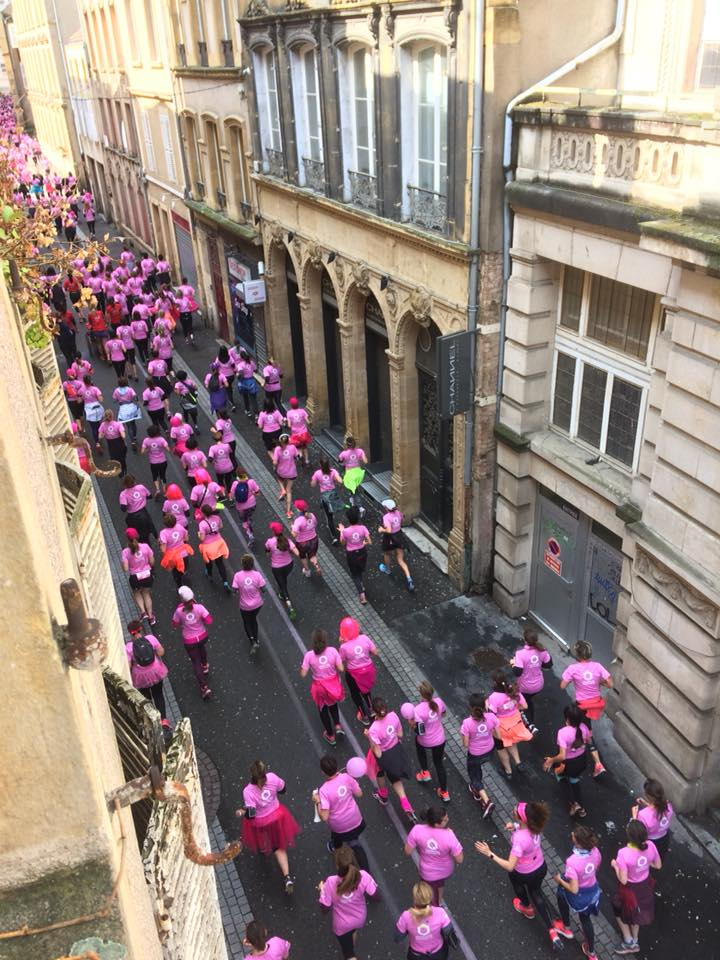
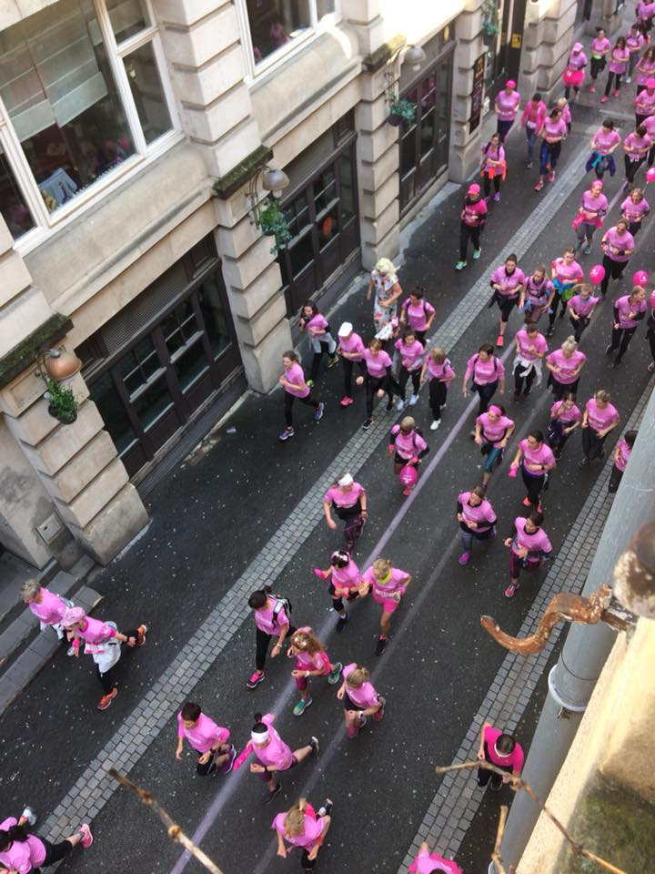
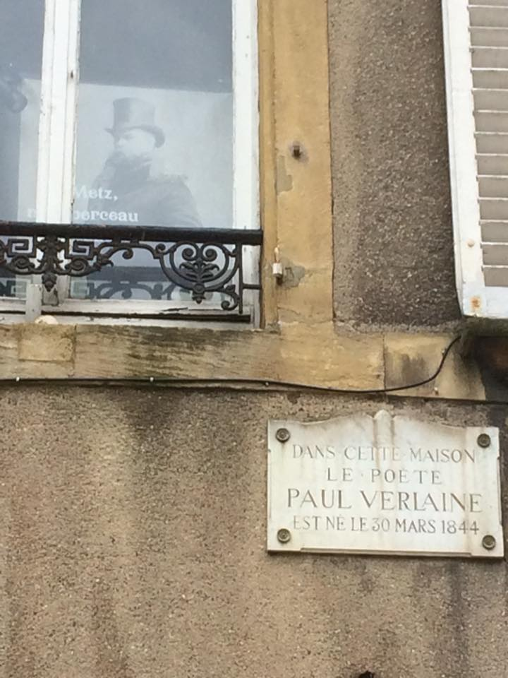
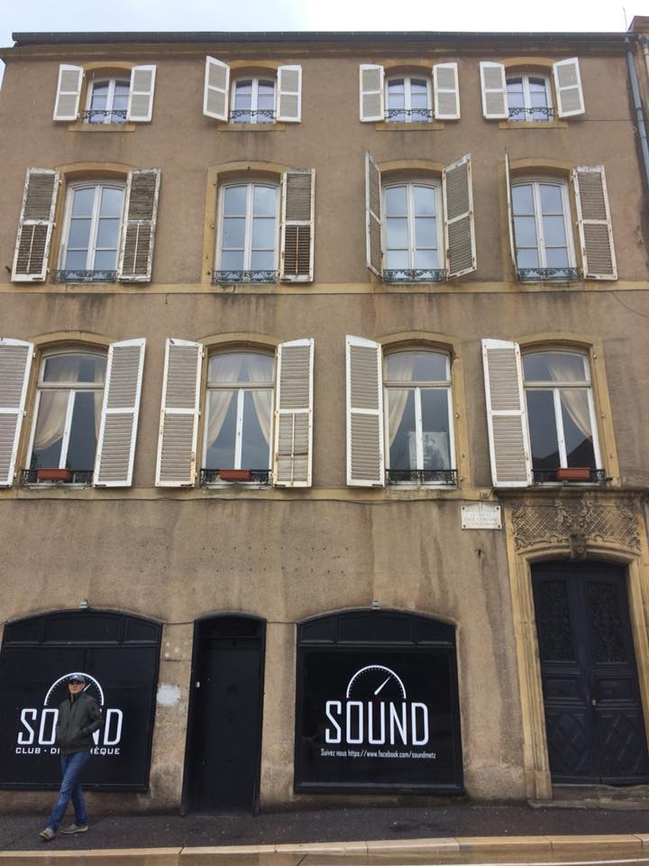

Arrived back from an early morning Sammy run along the Moselle, just in time to watch the 10k Breast Cancer Walk pass under the kitchen window of Katie and Bernard’s flat. All that pink ...!!


French poet Paul Verlaine (1844-1896) was born in Metz and is considered one of the greatest representatives of the ‘fin de siècle’ in poetry. Fittingly, he was associated with the Decadent movement and probably did more to popularise the drinking of Absinthe than a month of cinema adverts. Rather more prosaically, a nightclub now occupies his ground floor ...
h of cinema adverts. Rather more prosaically, a nightclub now occupies his ground floor ...

